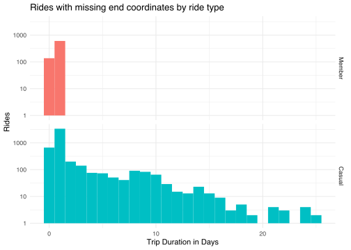
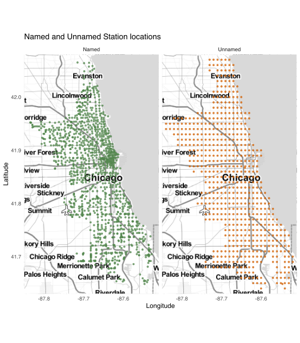
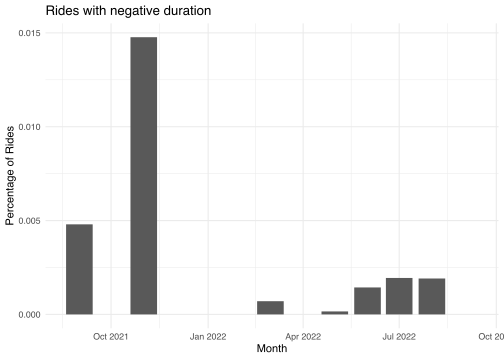

title: “Cyclistic Customer Analysis” subtitle: “Google Data Analytics Certificate Capstone” date: today image: images/josh-mccausland-8TfeD3J4VtQ-unsplash.jpg title-block-banner: true format: html: highlight-style: breezedark df-print: kable code-fold: true abstract-title: “Summary” abstract: “An analysis of historical Divvy Bikes ride data to identify differences in user cohort behaviour.” params: start_date: “September 2021” end_date: “August 2022” lease: “12345” editor: markdown: wrap: sentence —
Background
In 2016 Cyclistic launched a bike-sharing sharing offering which has grown to a fleet of 6000 geotracked bicycles and network of more than 1000 stations across Chicago.
Analysis by Cyclistic’s finance team has determined that riders who purchase annual memberships are more profitable than casual riders.
Head of marketing, Lily Moreno, has set a goal of designing marketing strategies aimed at converting casual riders to members. The intial step is to better understand how casual users and members differ. This information will provide a basis for members of the marketing analytics team to investigate why casual riders might purchase a membership, and how digital media could influence marketing strategy.
The executive team, which is detail oriented, will decide whether the proposed marketing strategies are approved.
Defining the business task
The scope of this analysis is limited to the first step, and investigates the question:
How do annual members and casual riders use Cyclistic bikes differently?
Unpacking this question highlights a number of areas that may provide useful insights.
What defines a member and a casual rider?
The Divvy Bikes pricing information indicates members pay an upfront annual fee to access pricing that includes “no-charge” ride time and lower per minute charges. Casual riders access ride sharing on an ad-hoc basis, paying a per-ride charge, and higher per minute charge which begins when the bike is undocked. Daily pass riders pay a day access fee to access unlimited 3 hour rides for the duration of the pass.
What influence do the plans have on the user behaviour?
Can we distinguish plan types by the average duration of rides? What percentage of riders exceed the included 45 minutes ride time of membership plans? Is this same for members and casuals?
This may help identify if time inclusions are a factor for casual riders considering membership.
When do different user cohorts ride?
Which days, and times are popular for the different cohorts? And are there identifiable differences or commonality in behaviours?
Does weather influence rider behaviour?
Are the types and number of rides related to day-to-day variations in weather or broader seasonal patterns? Are casual users “all season” or “fair weather” riders? Casual riders who ride around the year could be a group that would find membership attractive.
Where do different user cohorts ride?
Riders commuting to work are likely to use docking stations in business districts during the week. Recreational riders may prefer parks and areas along the shoreline or cafe precincts. Docking stations with high levels of usage on different days of the week should provide insight into where user hotspots are located.
Data sources
Divvy Bikes system data and pricing
The base data for individual rides was extracted from Divvy Bike data files covering the period 1 September 2021 to 31 August 2022. Additional data description and a download link is provided on the Divvy Bikes system data page.
The license allows inclusion of data within analyses and studies published for non-commercial. This clause covers the intended use.
Details of current pricing for Divvy Bikes offerings was accessed on 25 September 2022.
NOAA Climate Data
Weather data covering September 2021 to August 2022 ordered from NOOA National Centers for Environmental Information
O’Hare International Airport weather station was selected as representative of the Chicago region.
Divvy Bikes historical station status
Historical station status identifies which stations actively used between September 2021 and August 2022. This information is used to assist identifying Divvy operational rides in the data set.
Data cleaning and preparation
Initial import
The Divvy trip data files have a consistent naming format YYYYMM-divvy-tripdata.zip. This allows file names to be generated for months in the range September 2021 to August 2022.
divvy_files <- seq(
my(params$start_date),
my(params$end_date),
by = "months"
) %>%
enframe(
value = "timestamp"
) %>%
glue_data(
"{year(timestamp)}",
"{stringi::stri_sprintf('%02d', month(timestamp))}",
"-divvy-tripdata.zip"
)To preserve a local copy of the original data, zip files are downloaded to the data/raw folder. The folder is checked each time the script is run, and files which are already present are removed from the download list.
divvy_downloaded <- glue("data/raw/{divvy_files}")
to_dl <- divvy_files[!file.exists(divvy_downloaded)]Any files which are not present in the data/rawfolder are downloaded.
# Note that the preceding section will not execute
# correctly in a Quarto document.
# A script for the full import process can be found in the
# Github repository.
if (length(to_dl) > 0) {
download.file(
glue("https://divvy-tripdata.s3.amazonaws.com/{to_dl}"),
glue("data/raw/{to_dl}")
)
}The first 1000 rows are read from September 2021 zip file. This allows read_csv to determine the type of data in each column. The “guessed” column type specification can then inspected using the spec function.
bike_inspect <- map_dfr(
divvy_downloaded[1],
~ archive_read(.) %>%
read_csv(
n_max = 1000,
show_col_types = FALSE
)
)
spec(bike_inspect)cols(
ride_id = col_character(),
rideable_type = col_character(),
started_at = col_datetime(format = ""),
ended_at = col_datetime(format = ""),
start_station_name = col_character(),
start_station_id = col_character(),
end_station_name = col_character(),
end_station_id = col_character(),
start_lat = col_double(),
start_lng = col_double(),
end_lat = col_double(),
end_lng = col_double(),
member_casual = col_character()
)The types defined in the column specification appear to be reasonable choices based on naming of the columns.
To verify column naming is consistent across all files, the header row from each file is read. The resulting data frame is processed using distinct() to eliminate duplicated rows. If all headers are identical the resulting data frame will have a single row.
bike_headers <- map_dfr(
divvy_downloaded,
~ archive_read(.) %>%
read_csv(
n_max = 1,
col_names = FALSE,
show_col_types = FALSE
)
) %>%
distinct()
str(bike_headers)tibble [1 × 13] (S3: tbl_df/tbl/data.frame)
$ X1 : chr "ride_id"
$ X2 : chr "rideable_type"
$ X3 : chr "started_at"
$ X4 : chr "ended_at"
$ X5 : chr "start_station_name"
$ X6 : chr "start_station_id"
$ X7 : chr "end_station_name"
$ X8 : chr "end_station_id"
$ X9 : chr "start_lat"
$ X10: chr "start_lng"
$ X11: chr "end_lat"
$ X12: chr "end_lng"
$ X13: chr "member_casual"After verifying the detected formats, and checking column naming is consistent across all files, the full dataset can be imported. Passing the full column specification to read_csv() ensure that data which does not match the expected type is flagged as a problem. Issues that arise while importing data can be examined using the problems() function.
bike_rides <- map_dfr(
divvy_downloaded,
~ archive_read(.) %>%
read_csv(
col_types = cols(
ride_id = col_character(),
rideable_type = col_factor(levels = c(
"classic_bike",
"docked_bike",
"electric_bike"
)),
started_at = col_datetime(),
ended_at = col_datetime(),
start_station_name = col_character(),
start_station_id = col_character(),
end_station_name = col_character(),
end_station_id = col_character(),
start_lat = col_double(),
start_lng = col_double(),
end_lat = col_double(),
end_lng = col_double(),
member_casual = col_factor(levels = c(
"member",
"casual"
))
),
locale = locale(tz = "America/Chicago")
)
)Data inspection
With the data loaded from file, the data structure can checked with glimpse().
bike_rides %>%
glimpse()Rows: 5,883,043
Columns: 13
$ ride_id <chr> "9DC7B962304CBFD8", "F930E2C6872D6B32", "6EF7213790…
$ rideable_type <fct> electric_bike, electric_bike, electric_bike, electr…
$ started_at <dttm> 2021-09-28 16:07:10, 2021-09-28 14:24:51, 2021-09-…
$ ended_at <dttm> 2021-09-28 16:09:54, 2021-09-28 14:40:05, 2021-09-…
$ start_station_name <chr> NA, NA, NA, NA, NA, NA, NA, NA, NA, NA, "Clark St &…
$ start_station_id <chr> NA, NA, NA, NA, NA, NA, NA, NA, NA, NA, "TA13070001…
$ end_station_name <chr> NA, NA, NA, NA, NA, NA, NA, NA, NA, NA, NA, NA, NA,…
$ end_station_id <chr> NA, NA, NA, NA, NA, NA, NA, NA, NA, NA, NA, NA, NA,…
$ start_lat <dbl> 41.89000, 41.94000, 41.81000, 41.80000, 41.88000, 4…
$ start_lng <dbl> -87.68000, -87.64000, -87.72000, -87.72000, -87.740…
$ end_lat <dbl> 41.89, 41.98, 41.80, 41.81, 41.88, 41.88, 41.74, 41…
$ end_lng <dbl> -87.67, -87.67, -87.72, -87.72, -87.71, -87.74, -87…
$ member_casual <fct> casual, casual, casual, casual, casual, casual, cas…The output indicates that the data set has 5883043 rows, and 13 columns. The start_station_name, start_stattion_id, end_station_name and end_station_id columns appear to have a number of missing values - identified by NA.
The extent of the missing information can be assessed by counting the number of NA values in each column.
bike_rides %>%
summarise(across(
everything(),
~ sum(is.na(.x))
)) %>%
pivot_longer(
cols = everything(),
names_to = "Column",
values_to = "Missing Count"
)?(caption)
# A tibble: 13 × 2
Column `Missing Count`
<chr> <int>
1 ride_id 0
2 rideable_type 0
3 started_at 0
4 ended_at 0
5 start_station_name 884365
6 start_station_id 884363
7 end_station_name 946303
8 end_station_id 946303
9 start_lat 0
10 start_lng 0
11 end_lat 5727
12 end_lng 5727
13 member_casual 0?@tbl-missing-values indicates a significant number of records are missing end and start station name and id. End station location information is also missing small number of records. All other columns have complete data.
bike_rides %>%
mutate(
missing_start = is.na(start_station_name),
missing_end = is.na(end_station_name)
) %>%
summarise(
"Start Only" = sum(missing_start & !missing_end),
"End Only" = sum(missing_end & !missing_start),
Both = sum(missing_start & missing_end),
"Rides effected" = sum(missing_start | missing_end)
)?(caption)
# A tibble: 1 × 4
`Start Only` `End Only` Both `Rides effected`
<int> <int> <int> <int>
1 376594 438532 507771 1322897?@tbl-missing-by-station indicates that 22.49% of all rides are missing data for at least one docking station. This represents significant number of data points, and should be checked to determine whether this is an error or there have been systematic changes made.
bike_rides %>%
summarise(
start_lat = range(start_lat, na.rm = TRUE),
start_lng = range(start_lng, na.rm = TRUE),
end_lat = range(end_lat, na.rm = TRUE),
end_lng = range(end_lng, na.rm = TRUE)
)?(caption)
# A tibble: 2 × 4
start_lat start_lng end_lat end_lng
<dbl> <dbl> <dbl> <dbl>
1 41.6 -87.8 41.4 -89.0
2 45.6 -73.8 42.4 -87.5The maximum start longitude and latitude values listed in ?@tbl-coord-range are significantly different to the remaining values. This suggests some rides may have originated outside the Chicago metropolitan area serviced by Cyclistic.
It appears that some latitude and longitude values may have been rounded to two significant digits. Comparing the value to itself rounded to 2 decimal places identifies potentially truncated values. Clamping the coordinates in this way means actual locations can be anywhere within 1 square kilometre area centred on the given grid location.
bike_rides %>%
group_by(Missing = is.na(start_station_id)) %>%
summarise(
Latitude = sum(start_lat == round(start_lat, 2), na.rm = TRUE),
Longitude = sum(start_lng == round(start_lng, 2), na.rm = TRUE)
)?(caption)
# A tibble: 2 × 3
Missing Latitude Longitude
<lgl> <int> <int>
1 FALSE 78535 78530
2 TRUE 884363 884363Comparing ?@tbl-missing-values with ?@tbl-clipped-start indicates the count of start stations with missing names is the same as those which have rounded coordinates.
bike_rides %>%
group_by(Missing = is.na(end_station_id)) %>%
summarise(
Latitude = sum(end_lat == round(end_lat, 2), na.rm = TRUE),
Longitude = sum(end_lng == round(end_lng, 2), na.rm = TRUE)
)?(caption)
# A tibble: 2 × 3
Missing Latitude Longitude
<lgl> <int> <int>
1 FALSE 71004 71002
2 TRUE 940576 940576Comparing ?@tbl-missing-values with ?@tbl-clipped-end indicates the combined count of end stations with missing latitude and longitude and those with rounded coordinates matches the count of missing end station names.
This suggests that there is a systemic reason for the missing data, rather than error. It seems likely the location data has been anonymised to protect riders privacy. This needs to be verified with Cyclistics data collection team.
The ride duration and other information appear plausible and the lack of location data does not impact analysis of this data. Records with missing location information will be retained but filtered for any analysis which depends on accurate location.
While the majority of rounded coordinates occur where station names are missing approximately 8% are for stations which are named. These need to be checked during cleaning.
bike_rides %>%
summarise(
start_range = range(started_at),
end_range = range(ended_at)
)?(caption)
# A tibble: 2 × 2
start_range end_range
<dttm> <dttm>
1 2021-09-01 00:00:06 2021-09-01 00:00:41
2 2022-08-31 23:59:39 2022-09-06 21:49:04?@tbl-date-ranges indicates the dataset includes rides which finished after August 2022.
In total 6431 rides are active at midnight on 31 August 2022. Of these, 48 rides are still active at 9.00am on 1 September 2022. As these overnight rides are excluded from the start of the data set, I’ve opted to retain rides which completed prior to 9.00am to ensure this group of riders is not under represented.
Data Cleaning
Missing end station coordinates
The end stations with missing name and coordinates are addressed first.
no_end_coords <- bike_rides %>%
filter(is.na(end_lat), is.na(end_lng))
no_end_coords %>%
select(
-ride_id,
-starts_with("start_")
) %>%
head()?(caption)
# A tibble: 6 × 8
rideable_type started_at ended_at end_st…¹ end_s…² end_lat
<fct> <dttm> <dttm> <chr> <chr> <dbl>
1 classic_bike 2021-09-21 15:09:23 2021-09-21 16:40:03 <NA> <NA> NA
2 classic_bike 2021-09-26 08:32:12 2021-09-26 11:50:59 <NA> <NA> NA
3 classic_bike 2021-09-04 13:52:02 2021-09-04 17:21:15 <NA> <NA> NA
4 classic_bike 2021-09-22 10:01:36 2021-09-23 11:01:27 <NA> <NA> NA
5 classic_bike 2021-09-10 22:48:46 2021-09-11 23:48:39 <NA> <NA> NA
6 classic_bike 2021-09-15 01:53:24 2021-09-16 02:53:18 <NA> <NA> NA
# … with 2 more variables: end_lng <dbl>, member_casual <fct>, and abbreviated
# variable names ¹end_station_name, ²end_station_idThe preview of these rides contains several rides which extend for more than a day. Cyclistic treat bikes unlocked for more than 24 hours as stolen. These rides are likely to be bikes that have been reported stolen and not physically docked at the ride termination time.
no_end_coords %>%
mutate(member_casual = recode(
member_casual,
"member" = "Member", "casual" = "Casual"
)) %>%
group_by(member_casual) %>%
summarise(triptime = as.numeric(started_at %--% ended_at, units = "days")) %>%
ggplot(aes(triptime, fill = member_casual)) +
geom_histogram(binwidth = 1) +
scale_y_log10() +
guides(fill = "none") +
facet_grid(rows = vars(member_casual)) +
labs(
title = "Rides with missing end coordinates by ride type",
x = "Trip Duration in Days",
y = "Rides"
) +
theme_minimal()
The plot shows that around 5000 of the 5727 rides terminated after more than 24 hours. Notably casual rides are the biggest contributor.
Cyclistic operational rides
A list of stations that were In-Service between September 2021 and August 2022 was extracted from a dataset maintained by City of Chicago. The dataset for the period of interest contains over 35 million rows recording the status of each docking station at hour intervals.
Due to the size of the dataset the processed listing of stations is used in this analysis.
active_stations <- read_csv(
"data/processed/stations_in_use.csv",
show_col_types = FALSE
)
active_stations %>%
slice_sample(n = 6) %>%
select(-id)?(caption)
# A tibble: 6 × 4
timestamp station_name latitude longitude
<dttm> <chr> <dbl> <dbl>
1 2022-05-09 15:14:55 Hiawatha Park 41.9 -87.8
2 2022-05-09 15:14:55 Bradley Park 41.7 -87.6
3 2022-05-09 15:14:55 Parnell Ave & 119th St 41.7 -87.6
4 2021-08-31 05:05:35 Noble St & Milwaukee Ave 41.9 -87.7
5 2021-08-31 05:05:35 Sheridan Rd & Buena Ave 42.0 -87.7
6 2021-10-27 19:15:05 Albany Ave & Belmont Ave 41.9 -87.7A random sample of stations from the dataset is shown in ?@tbl-stations-in-use. The timestamp indicates the first time a station appears as In-Service in the original dataset.
The active stations dataset is used to identify stations that were not listed as publicly available.
unlisted_start <- bike_rides %>%
anti_join(
active_stations,
by = c("start_station_name" = "station_name")
) %>%
select(
station_name = start_station_name,
station_id = start_station_id
)
unlisted_end <- bike_rides %>%
anti_join(
active_stations,
by = c("end_station_name" = "station_name")
) %>%
select(
station_name = end_station_name,
station_id = end_station_id
)
unlisted_stations <- unlisted_start %>%
bind_rows(unlisted_end) %>%
drop_na(station_name, station_id) %>%
group_by(station_name, station_id) %>%
summarise(count = n())
unlisted_stations?(caption)
# A tibble: 15 × 3
# Groups: station_name [13]
station_name station_id count
<chr> <chr> <int>
1 Base - 2132 W Hubbard Hubbard Bike-checking (LB… 1182
2 Base - 2132 W Hubbard Warehouse Hubbard Bike-checking (LB… 963
3 Bissell St & Armitage Ave - Charging Bissell St & Armitage Ave… 38
4 Bissell St & Armitage Ave - Charging chargingstx1 2
5 DIVVY CASSETTE REPAIR MOBILE STATION DIVVY CASSETTE REPAIR MOB… 8
6 Hastings WH 2 Hastings WH 2 5
7 Lincoln Ave & Roscoe St - Charging Lincoln Ave & Roscoe St -… 6
8 NewHastings 2059 Hastings Warehouse S… 47
9 Pawel Bialowas - Test- PBSC charging station Pawel Bialowas - Test- PB… 2
10 Public Rack - Kedzie Ave & 62nd Pl 1038 1
11 Throop/Hastings Mobile Station Throop/Hastings Mobile St… 3
12 WEST CHI-WATSON DIVVY 001 21
13 WEST CHI-WATSON DIVVY 001 - Warehouse tes… 4
14 WestChi DIVVY 001 - Warehouse tes… 6
15 Wilton Ave & Diversey Pkwy - Charging Wilton Ave & Diversey Pkw… 38?@tbl-unlisted-stations summarises stations which appear in bike_rides without a corresponding match in the active_stations dataset.
The majority of stations in the table appear to have an operational function. Those ending with “- Charging” appear to be associated with testing of new charging stations prior to the company publicly announcing their availability.
Removing operational and no-return rides
Before proceeding with further manipulation and cleaning, the observations with identified problems should be removed. This is done using dplyr::anti_join() to filter the bike_rides dataset removing items matching those found in the unlisted_stations and no_end_coords data.frames.
bike_rides <- bike_rides %>%
anti_join(
unlisted_stations,
by = c("start_station_name" = "station_name")
) %>%
anti_join(
unlisted_stations,
by = c("end_station_name" = "station_name")
) %>%
anti_join(
no_end_coords,
by = "ride_id"
)
bike_rides %>%
slice_sample(n = 6)| ride_id | rideable_type | started_at | ended_at | start_station_name | start_station_id | end_station_name | end_station_id | start_lat | start_lng | end_lat | end_lng | member_casual |
|---|---|---|---|---|---|---|---|---|---|---|---|---|
| 89A40A49DBAA4B29 | electric_bike | 2021-10-01 16:41:45 | 2021-10-01 16:48:50 | Larrabee St & Division St | KA1504000079 | Larrabee St & Armitage Ave | TA1309000006 | 41.90342 | -87.64311 | 41.91814 | -87.64384 | member |
| E8331ADF76B98BCD | electric_bike | 2022-06-08 21:31:44 | 2022-06-08 21:33:53 | Wells St & Elm St | KA1504000135 | Franklin St & Chicago Ave | 13017 | 41.90283 | -87.63467 | 41.89675 | -87.63567 | member |
| 8547CC66FF7562FD | classic_bike | 2021-12-10 13:36:26 | 2021-12-10 13:39:21 | LaSalle Dr & Huron St | KP1705001026 | Dearborn Pkwy & Delaware Pl | TA1307000128 | 41.89488 | -87.63233 | 41.89897 | -87.62991 | casual |
| 7D1F8A0290344979 | electric_bike | 2022-04-11 16:19:25 | 2022-04-11 16:24:18 | Wabash Ave & Adams St | KA1503000015 | Clinton St & Washington Blvd | WL-012 | 41.87930 | -87.62577 | 41.88338 | -87.64117 | member |
| 31840C676EFDEC0E | classic_bike | 2021-10-08 13:37:29 | 2021-10-08 13:52:24 | Broadway & Wilson - Truman College Vaccination Site | 13074 | Sheridan Rd & Lawrence Ave | TA1309000041 | 41.96522 | -87.65814 | 41.96952 | -87.65469 | member |
| 1B16FEAEFB07E170 | electric_bike | 2022-04-25 17:01:15 | 2022-04-25 17:30:31 | NA | NA | NA | NA | 41.94000 | -87.73000 | 41.91000 | -87.67000 | casual |
Table 1 shows a sample of the dataset after initial cleaning.
Named stations with rounded coordinates
Some named stations were found to have rounded location coordinates. Additionally there is some inaccuracy of reported location coordinates.
To rectify this, the location and id information for each active station was joined to the rides dataset based on station name.
Joining the active_station data also replaces inaccurate bike GPS location data which clusters around stations with a single official location per docking station.
bike_rides <- bike_rides %>%
left_join(
active_stations,
by = c("start_station_name" = "station_name")
) %>%
select(-timestamp) %>%
left_join(
active_stations,
by = c("end_station_name" = "station_name"),
suffix = c("_start", "_end")
) %>%
select(-timestamp) %>%
distinct(ride_id, .keep_all = TRUE) %>%
mutate(
latitude_end = if_else(
is.na(latitude_end),
end_lat,
latitude_end
),
longitude_end = if_else(
is.na(longitude_end),
end_lng,
longitude_end
),
latitude_start = if_else(
is.na(latitude_start),
start_lat,
latitude_start
),
longitude_start = if_else(
is.na(longitude_start),
start_lng,
longitude_start
)
) %>%
select(-ends_with("_lng"), -ends_with("_lat"))library(ggmap)
ss <- bike_rides %>%
mutate(
missing = if_else(
!is.na(start_station_name),
"Named",
"Unnamed"
),
ride_day = date(started_at)
) %>%
select(ride_day, missing, latitude_start, longitude_start) %>%
group_by(missing, latitude_start, longitude_start) %>%
summarise(
rides = n(),
avg_rides = rides / n_distinct(ride_day),
.groups = "drop"
)
bounding_box <- ss %>%
summarise(
left = min(longitude_start) - 0.01,
bottom = min(latitude_start) - 0.01,
right = max(longitude_start) + 0.01,
top = max(latitude_start) + 0.01
) %>%
unlist()
chi_map <- get_stamenmap(
bounding_box,
maptype = "toner-lite"
)ggmap(chi_map) +
geom_point(
data = ss,
aes(
longitude_start,
latitude_start,
colour = missing
),
size = 1,
alpha = 0.75
) +
facet_grid(cols = vars(missing)) +
guides(colour = "none") +
scale_colour_manual(values = c("#52854C", "#D16103")) +
labs(
title = "Named and Unnamed Station locations",
x = "Longitude",
y = "Latitude"
) +
theme_minimal()
Ride duration
Adding Ride Duration, Time and Day of Week
To add analysis calculated columns for the length of ride, the hour the ride started and the day of week are added to the dataset.
bike_rides <- bike_rides %>%
mutate(
ride_int = started_at %--% ended_at,
ride_time = as.duration(ride_int),
month = month(started_at, label = TRUE),
hour = hour(started_at),
day = wday(started_at, label = TRUE),
.before = start_station_name
)
bike_rides %>%
select(-ride_id, -ride_int) %>%
slice_sample(n = 6)?(caption)
# A tibble: 6 × 18
rideabl…¹ started_at ended_at ride_time month
<fct> <dttm> <dttm> <Duration> <ord>
1 classic_… 2021-09-25 23:20:49 2021-09-25 23:42:21 1292s (~21.53 minutes) Sep
2 classic_… 2022-02-28 15:20:32 2022-02-28 15:28:30 478s (~7.97 minutes) Feb
3 electric… 2022-05-02 11:07:58 2022-05-02 11:12:29 271s (~4.52 minutes) May
4 electric… 2021-09-29 17:09:37 2021-09-29 17:18:05 508s (~8.47 minutes) Sep
5 classic_… 2022-08-18 08:11:48 2022-08-18 08:18:19 391s (~6.52 minutes) Aug
6 electric… 2022-07-23 22:11:32 2022-07-23 22:29:51 1099s (~18.32 minutes) Jul
# … with 13 more variables: hour <int>, day <ord>, start_station_name <chr>,
# start_station_id <chr>, end_station_name <chr>, end_station_id <chr>,
# member_casual <fct>, id_start <dbl>, latitude_start <dbl>,
# longitude_start <dbl>, id_end <dbl>, latitude_end <dbl>,
# longitude_end <dbl>, and abbreviated variable name ¹rideable_type?@tbl-add-duration shows a sample of the resulting dataset with added columns.
Minimum and maximum ride times can now be checked for plausibility.
bike_rides %>%
summarise(
Minimum = min(ride_time) / 3600,
Maximum = max(ride_time) / 3600
)| Minimum | Maximum |
|---|---|
| -2.290278 | 678.4169 |
Rides with negative duration should not occur, so this needs to be checked and corrected.
Addressing negative ride durations
bike_rides %>%
group_by(
month = floor_date(as.Date(started_at), "month")
) %>%
summarise(
nrt = mean(ride_time < 0) * 100
) %>%
ggplot(aes(month, nrt)) +
geom_col() +
theme_minimal() +
labs(
title = "Rides with negative duration",
x = "Month",
y = "Percentage of Rides"
)
The plot indicates that the precentage rides with negative ride durations is around three times higher in November than the next highest month - September.
bike_rides %>%
group_by(month, day) %>%
summarise("Percent Negative" = mean(ride_time < 0) * 100) %>%
filter(`Percent Negative` > 0)`summarise()` has grouped output by 'month'. You can override using the
`.groups` argument.?(caption)
# A tibble: 19 × 3
# Groups: month [7]
month day `Percent Negative`
<ord> <ord> <dbl>
1 Mar Sat 0.00578
2 May Mon 0.000914
3 Jun Mon 0.00120
4 Jun Tue 0.00961
5 Jun Thu 0.000762
6 Jul Tue 0.0121
7 Jul Fri 0.00170
8 Jul Sat 0.00122
9 Aug Mon 0.00191
10 Aug Tue 0.000781
11 Aug Thu 0.00401
12 Aug Fri 0.000867
13 Aug Sat 0.00594
14 Sep Sun 0.00260
15 Sep Tue 0.00239
16 Sep Wed 0.0235
17 Sep Thu 0.000819
18 Sep Sat 0.00242
19 Nov Sun 0.121 All rides with negative duration in November occurred on the 7th.
bike_rides %>%
filter(
month(started_at) == 11,
day(started_at) == 7
) %>%
group_by(Hour = hour(started_at)) %>%
summarise(
"Percent Negative" = mean(ride_time < 0) * 100,
Count = sum(ride_time < 0)
) %>%
filter(`Percent Negative` > 0)?(caption)
# A tibble: 1 × 3
Hour `Percent Negative` Count
<int> <dbl> <int>
1 1 10.5 53?@tbl-hour-neg-rides shows that all negative ride durations on 7th November were taken between 1.00am and 2.00am. This coincides with the end of daylight savings in Chicago. At 2.00am clocks went back one hour to 1.00am.
Ride start and end timestamp values in the dataset do not include timezone information. Timestamps between 1.00am and 2.00am could refer to either Central Daylight Time or Central Standard Time meaning there is an ambiguity which is very difficult to resolve.
The negative duration of rides which start and end between 1.00am and 2.00am can be resolved by adding 60 minutes. However the ambiguity of the rides which have one end point in this time range remains.
I recommend that timezone be recorded as part of the timestamp in future to avoid these issues.
For the present analysis I’ve chosen to correct the negative timestamps between 1.00am and 2.00am and to leave the ambiguous timestamps unaltered.
bike_rides <- bike_rides %>%
mutate(ride_time = if_else(
(ride_time < 0) & (date(started_at) == date("2021-11-07")),
ride_time + 3600,
ride_time
))Other ride duration issues
The Cyclistic website indicates that rides of less than 60 seconds have been removed from the dataset. Cyclistic also state that if rides exceed 24 hours the bike is treated as stolen and the user is fined $1200.
bike_rides <- bike_rides %>%
filter(ride_time > 60, ride_time < 86400)bike_rides %>%
filter(ride_time > 43200) %>%
summarise(n())# A tibble: 1 × 1
`n()`
<int>
1 2152